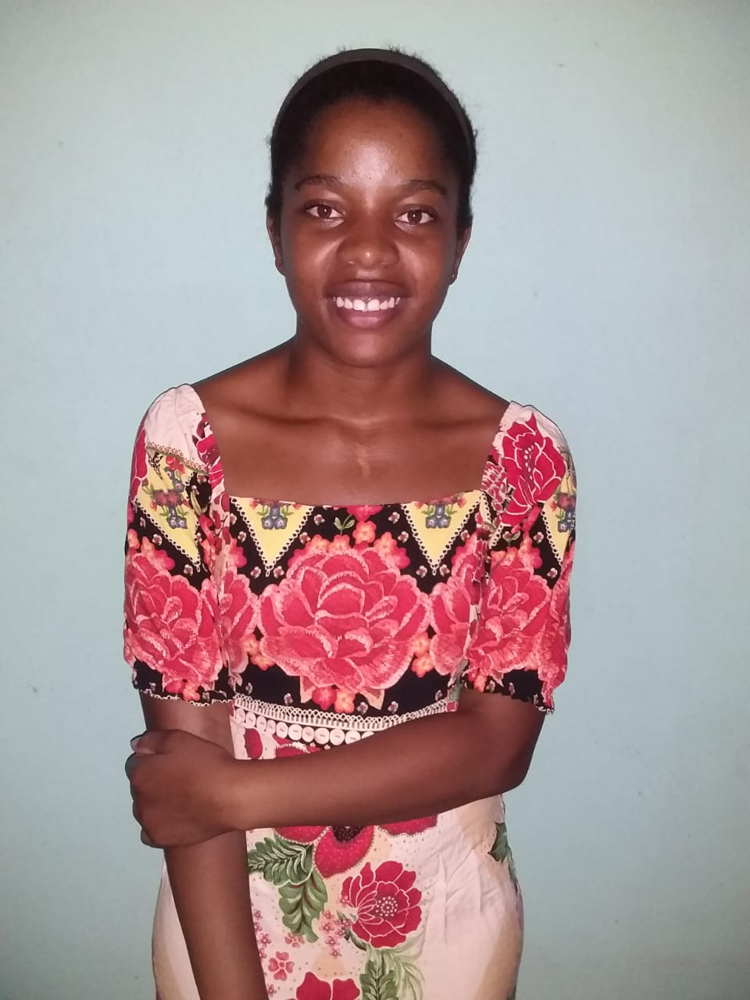
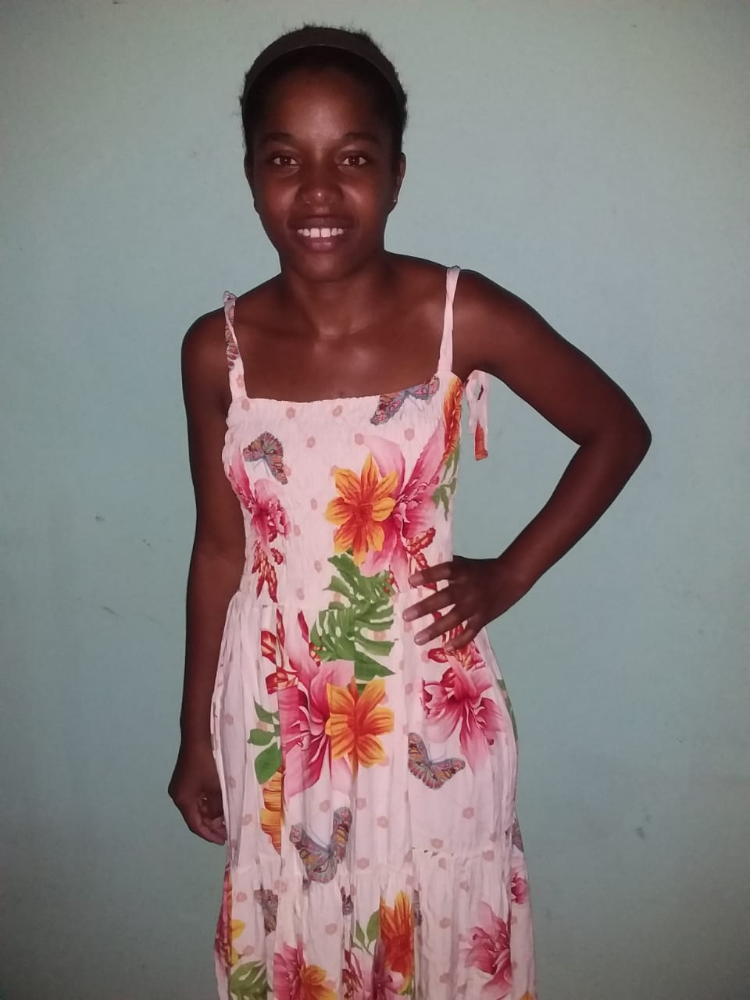

O que é o PEIR
O PEIR é um Portal de Empregabilidade Inclusiva Regional, que tem como objetivo conectar pessoas com deficiência (PcD) a oportunidades de emprego. Além disso, oferece às empresas e empregados cursos de capacitação, promovendo inclusão e igualdade no mercado de trabalho.
Equipe de Desenvolvimento
Idealizador do Sistema: Woquiton Fernandes
Desenvolvedores: Ana Carolina, Lécia Tamara, Tamara Lécia, e Thierre.
Data: 12/11/2024
Equipe por trás do PEIR
Ana Carolina

Lécia Tamara
Thierre

Tamara Lécia
Professor Woquiton Fernandes